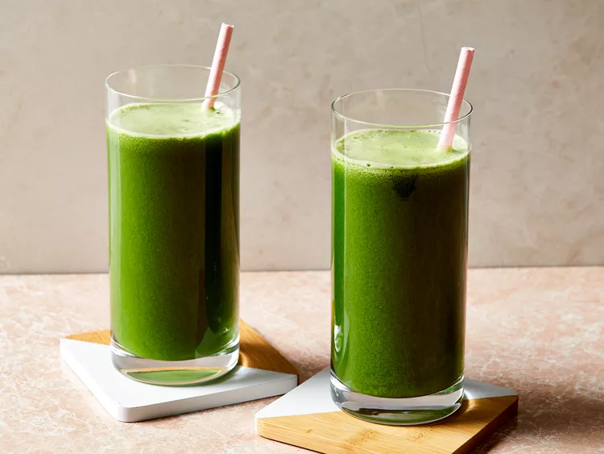

Healthy Green Juice

Healthy Green Juice Image
This green juice recipe is great for detoxing after the holidays or whenever you have overdone it! It's worth buying organic celery, even if you buy conventional for everything else. Adjust fruit and veggie amounts to suit your personal taste. More apple equals a sweeter drink.
Ingredients
- 6 leaves kale
- 4 stalks celery, leaves removed
- 2 green apples, halved
- 1 cucumber
- ½ lemon, peeled
- 1 (1 inch) piece fresh ginger
DIRECTIONS
- Gather all ingredients.
- Process kale, celery, green apples, cucumber, lemon, and ginger through a juicer.
- Serve immediately or store in a glass jar in the fridge for up to a day; shake before drinking.